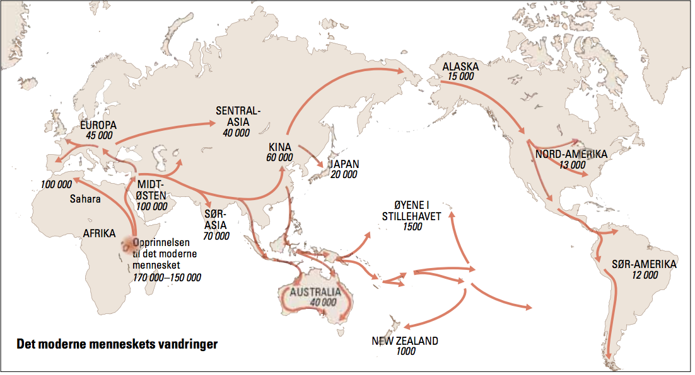

De første menneskene
Menneskene som levde på jorden for 30 000 år siden måtte kjempe hardt for å skaffe mat og for å overleve i et ofte kaldt og ugjestmildt miljø. Men de klarte å lage gode våpen og varme klær. De kunne gjøre opp ild og bygge seg lune bosteder. De hadde også utviklet språk, abstrakt tenkning, selvbevissthet og evne til problemløsning, slik at kunnskaper og ferdigheter kunne bringes videre til neste generasjon. Egenskapene er typiske for moderne mennesker, resultat av evolusjon.
Ut av Afrika
Vi har spor for 2,5 millioner år tilbake fra Afrika etter skapninger som har brukt steinredskaper. De var kortvokste og hadde et hjernevolum på halvparten av vår. Da de startet å gå på to bein kunne de bruke armene sine på f.eks. å bære hjem jaktbyttet. Det var Homo erectus, som vandret ut av Afrika til Europa og Asia for 1,5 til 2,0 millioner siden. De utviklet seg videre til nye arter i møte med forskjellige omgivelser.

Artene døde etterhvert ut, og de som holdt lengst ut var neandertalerne som levde i Europa from til 25 000 - 20 000 år siden. En god del forskere mener at vi stammer direkte fra menneskene som utviklet seg i nord-øst Afrika for ca. 150 000 - 170 000 år siden. Vi ser ikke så annerledes ut i utseende, men språkkunnskapene ikke utviklet fult enda.
Mesteparten av sin levetid har Homo sapiens bodd og utviklet seg i Afrika. Enkelte grupper av Homo sapiens begynte å spre seg fra Afrika for omtrent 60 000-70 000 år siden. Det hadde kanskje litt med klimaendringer å gjøre, og det ble vanskelige å jakte på storvilt og leve på savannene. Etter hvert var alle steder på jorda befolket. Man kunne gå over til Amerika siden istiden gjorde deler av havområdene i dag frosset.
Siden de moderne mennesket var intelligent og teknologisk dyktig vant de over andre arter. Det skjedde i kamp over samme territoriet og storviltet. Artene ble gradvis borte og det kan også ha sammenheng med ut stort vulkanutbrudd for 75 000 år siden på Sumatra. Stor områder i Asia ble lagt under aske og temperaturen sank i hele verden.
Spredningen av Homo sapiens førte til evne til å tilpasse seg til klima og skaffe mat. Dette påvirket hudfargen og mennesket fikk mørkere hudfarge for å beskytte seg mot solen. Det påvirket ikke det genetiske materialet og vi kan derfor ikke dele Homo sapiens i ulike raser.
2 mill
Homo erectus drar ut fra Afrika
70 000
Homo sapiens ut av Afrika og befolker verden
12 000
Jordbruksrevolusjonen
170 000
Homo Sapiens
5 500
Første sivilisasjon i Mesopotamia